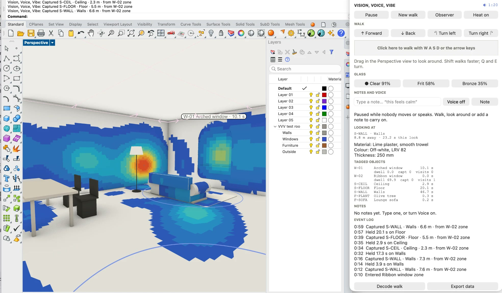
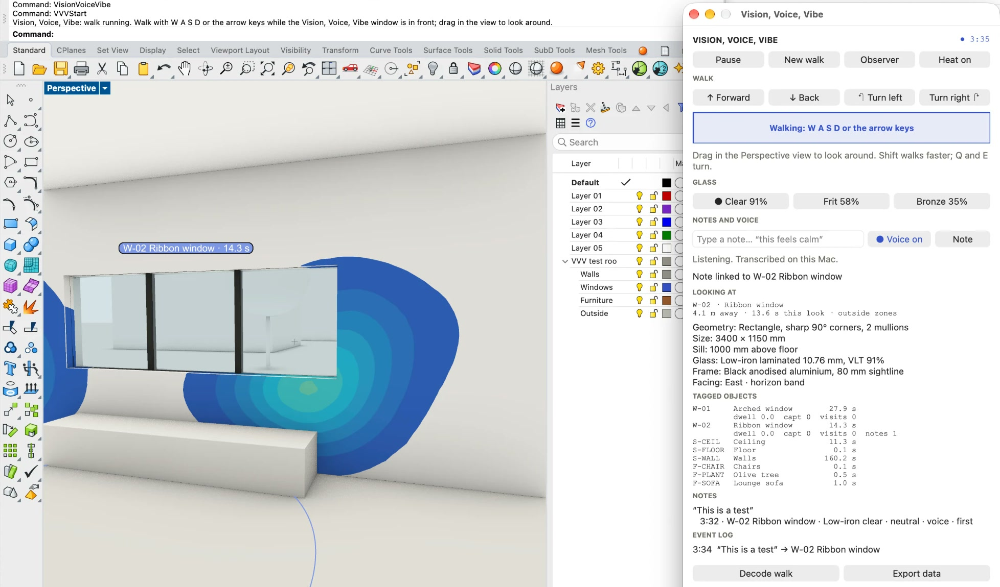

Any platform · Rhino 9 plug-in
The walk, the tagged metadata, the heat map and voice notes run as a native plug-in on the Rhino model itself. One more step toward a fully digital design process, with the data to make the best call for the client.


Visual Vibes · Rhino 9 for Mac · screenshots from a live session